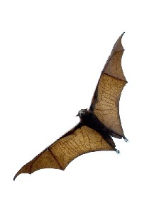
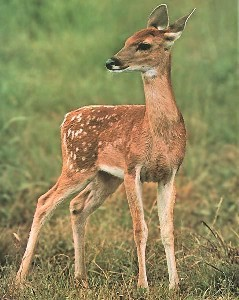
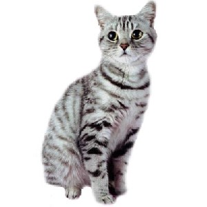
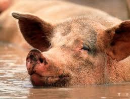
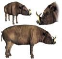
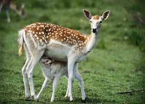

animal
ɑrɑːtterlɔːtʰo आराऽत्तेरलौऽथो MORPH: ɑ-rɑː-tter-lɔːtʰo. N सं. old pig; बूढ़ा सूअर. SD: animal, जानवर.
|
ɑttɑywulɛfo आत्तायवूलैफो N सं. wild cat; जंगली बिल्ली. SD: animal, जानवर.
ɑʈɑʈɑlikʰerɑː आटाटालीखेराऽ MORPH: ɑʈɑʈɑli-kʰerɑː. N सं. pig, domestic; पालतू सूअर. SD: animal, जानवर.
ɑʈɔbɑrmo आटौबार्मो N सं. a white variety of pig; एक प्रकार का सफ़ेद सूअर. SD: animal, जानवर.
bereːʈ बेरेऽट N सं. a kind of frog; एक प्रकार का मेंढक. SD: animal, जानवर.
berɛt बेरैत N सं. frog, small; छोटा मेंढक. SD: animal, जानवर.
bibicɑo बीबीचाओ MORPH: bibi-cɑo. Etym: Khora; खोरा. N सं. bitch, she dog; कुतिया. SD: animal, जानवर.
 |
 birei बीरेई Etym: Jeru; जेरू. VAR: bire बीरे; bireːi बीरेऽई; birɛi बीरैई; bireːy बीरेऽय. Etym: Jeru; जेरू. VAR: birɛi बीरैई. N सं. a kind of big bat; एक प्रकार का विशाल चमगादड़. SD: animal, जानवर.
birei बीरेई Etym: Jeru; जेरू. VAR: bire बीरे; bireːi बीरेऽई; birɛi बीरैई; bireːy बीरेऽय. Etym: Jeru; जेरू. VAR: birɛi बीरैई. N सं. a kind of big bat; एक प्रकार का विशाल चमगादड़. SD: animal, जानवर.
biretʰire बीरेथीरे MORPH: bire-tʰire. N सं. young bat; बच्चा चमगादड़. SD: animal, जानवर.
bireye बीरेये N सं. bat, female; मादा चमगादड़. SD: animal, जानवर.
biritcɑo बीरीत्चाओ MORPH: birit-cɑo. VAR: birik-cɑo बीरीकचाओ. N सं. monkey; बंदर. SD: animal, जानवर. SEE: kʰeŋe ‘cat’ ‘बिल्ली खेञे ’.
 |
 cɑo चाओ N सं. dog; कुत्ता.
cɑo चाओ N सं. dog; कुत्ता.  cɑo bem pʰɛre cɔm चाओ बेम फैरे चौम. Dogs bite each other. कुत्ते एक-दूसरे को काटते हैं।.
cɑo bem pʰɛre cɔm चाओ बेम फैरे चौम. Dogs bite each other. कुत्ते एक-दूसरे को काटते हैं।.  cɑo bem bošom चाओ बेम बोशोम. Dogs fight each other. कुत्ते आपस में लड़ते हैं।. SD: animal, जानवर.
cɑo bem bošom चाओ बेम बोशोम. Dogs fight each other. कुत्ते आपस में लड़ते हैं।. SD: animal, जानवर.
cɑobukʰu चाओबूखू MORPH: cɑo-bukʰu. VAR: cɑːwbuxu चाऽवबूखू. N सं. bitch; कुतिया. SD: animal, जानवर.
cɑoercek चाओएरचेक MORPH: cɑo-ercek. N सं. dog (smart); तेज़ कुत्ता. SD: animal, जानवर.
cɑotʰɑro चाओथारो MORPH: cɑo-tʰɑro. N सं. male dog; नर कुत्ता. SD: animal, जानवर.
cɑotʰire चाओथीरे MORPH: cɑo-tʰire. N सं. puppy; पिल्ला. SD: animal, जानवर.
 |
 ɖirimrɑː डीरीमराऽ MORPH: ɖirim-rɑː. N सं. pig, black; काला सूअर. SD: animal, जानवर.
ɖirimrɑː डीरीमराऽ MORPH: ɖirim-rɑː. N सं. pig, black; काला सूअर. SD: animal, जानवर.
ɖuɑmo डूआमो N सं. newborn pig; सूअर का बच्चा. SD: animal, जानवर. NT: Piglet in the first stage of four measured stages. सूअर के शारीरिक विकास के चार चरणों में पहला चरण।.
ekɑrɑɸil एकाराफील MORPH: ekɑ-rɑɸil. VAR: ek-rɑpʰil एकराफील. N सं. young pig; सूअर का बच्चा. SD: animal, जानवर, life, जीवन.
eʈɔltɔmɔ एटौलटौमौ ADJ वि. pig, white; सूअर (सफ़ेद). SD: animal, जानवर.
 |
 ɛren ऐरेन N सं. deer; हिरन. SD: animal, जानवर. NT: Borrowed from Hindi. This deer is not indigenous to the Andaman Islands. हिन्दी से लिया गया शब्द, हिरन अण्डमान द्वीपों के लिए स्वदेशी नहीं है।.
ɛren ऐरेन N सं. deer; हिरन. SD: animal, जानवर. NT: Borrowed from Hindi. This deer is not indigenous to the Andaman Islands. हिन्दी से लिया गया शब्द, हिरन अण्डमान द्वीपों के लिए स्वदेशी नहीं है।.
ɛteilepʰo ऐतेईलेफो N सं. jungle cat which is never seen; जंगली बिल्ली जो कभी भी नहीं देखी गई. SD: animal, जानवर.
formucɑːw फोरमूचाऽव MORPH: formu-cɑːw. N सं. lion or tiger; सिंह या बाघ. SD: animal, जानवर.
 |
 jibeʈ जीबेट N सं. a small bat found in houses; छोटा घरेलू चमगादड़. SD: animal, जानवर.
jibeʈ जीबेट N सं. a small bat found in houses; छोटा घरेलू चमगादड़. SD: animal, जानवर.
jiːrmu जिऽरमू N सं. horse; घोड़ा. SD: animal, जानवर.
kɑrɑpʰil काराफील MORPH: kɑ-rɑ-pʰil. N सं. piglet; सूअर का बच्चा. SD: animal, जानवर. NT: Piglet in the second stage of the four stages of growth. सूअर के बढ़ने की चार अवस्थाओं में से दूसरी अवस्था का सूअर।.
 |
 kʰeŋe खेङे N सं. cat; बिल्ली. SD: animal, जानवर. SEE: biritcɑo ‘monkey’ ‘बंदर बीरीत्चाओ ’.
kʰeŋe खेङे N सं. cat; बिल्ली. SD: animal, जानवर. SEE: biritcɑo ‘monkey’ ‘बंदर बीरीत्चाओ ’.
kʰoʈ खोट N सं. a kind of bat; एक प्रकार का चमगादड़. SD: animal, जानवर. NT: A bat that lives among coconut leaves. नारियल के पत्तों पर रहने वाला चमगादड़।.
kui कूई Etym: Onge; ओंगे. N सं. pig; सूअर. SD: animal, जानवर.
liʈkʰɛmɔ लीटखैमौ VAR: liʈkʰemo लीटखेमो; liʈxeːmo लीटखेऽमो; wiʈkʰemo वीटखेमो. N सं. frog which lives in the water; पानी में रहने वाला मेंढक. SD: animal, जानवर.
meŋoʈɑrpʰuctɑrɑulibi मेङोटारफूच्ताराऊलीबी MORPH: meŋo-ʈɑr-pʰuc-tɑrɑ-ulibi. N सं. crab-eating monkey; केकड़ा खाने वाला बंदर. SD: animal, जानवर.
oʈ ओट N सं. bat; चमगादड़. SD: animal, जानवर.
pʰormucɑo फोरमूचाओ MORPH: pʰor-mucɑo. N सं. dog, big; बड़ा कुत्ता. SD: animal, जानवर.
pʰoroɖuletmo1 फोरोडूलेत्मो MORPH: pʰoroɖu-letmo. N सं. balloon frog; एक प्रकार का गेंदनुमा मेंढक. SD: animal, जानवर. NT: This frog balls up if hit. ठोकर लगने से यह मेंढक एक गोल गेंद का रूप ले लेता है।. SEE: pʰoroɖuletmo2 ‘ladder’ ‘सीढ़ी फोरोडूलेत्मोhm:{2}’.
 |
 pʰorube फोरूबे VAR: porube पोरूबे; pʰɔrube फौरूबे; borube बोरूबे; ɸorube फोरूबे. N सं. frog of the Andamans; अण्डमानी मेंढक. SD: animal, जानवर. NT: It becomes active in the night. The Karen community eats it. रात के समय निकलने वाले इस मेंढक को कैरन समुदाय के लोग शौक से खाते हैं।.
pʰorube फोरूबे VAR: porube पोरूबे; pʰɔrube फौरूबे; borube बोरूबे; ɸorube फोरूबे. N सं. frog of the Andamans; अण्डमानी मेंढक. SD: animal, जानवर. NT: It becomes active in the night. The Karen community eats it. रात के समय निकलने वाले इस मेंढक को कैरन समुदाय के लोग शौक से खाते हैं।.
 |
 rɑ2 रा VAR: rɑː राऽ; ɽɑ ड़ा. Etym: Jeru; जेरू. N सं. pig; सूअर. SD: animal, जानवर. SEE: rɑ1 ‘all’ ‘सारा राhm:{1}’.
rɑ2 रा VAR: rɑː राऽ; ɽɑ ड़ा. Etym: Jeru; जेरू. N सं. pig; सूअर. SD: animal, जानवर. SEE: rɑ1 ‘all’ ‘सारा राhm:{1}’.
rɑbukʰu राबूखू MORPH: rɑ-bukʰu. N सं. pig (female); सूअर (मादा). SD: animal, जानवर.
rɑcɑkɑmo राचाकामो MORPH: rɑ-cɑkɑmo. N सं. old pig; बूढ़ा सूअर. SD: animal, जानवर, attribute, विशेषता.
 rɑɖirim राडीरीम MORPH: rɑ-ɖirim. N सं. pig, black; काला सूअर. SD: animal, जानवर.
rɑɖirim राडीरीम MORPH: rɑ-ɖirim. N सं. pig, black; काला सूअर. SD: animal, जानवर.
rɑkɑrɑpʰil राकाराफील MORPH: rɑ-kɑrɑ-pʰil. N सं. mid-sized pig, bigger than a piglet; किशोर सूअर. SD: animal, जानवर.
 rɑtɑtɑt रातातात MORPH: rɑ-tɑ-tɑt. N सं. tongue, of a pig; सूअर की जीभ. SD: body part term, शारीरिक अंग शब्दावली, animal, जानवर.
rɑtɑtɑt रातातात MORPH: rɑ-tɑ-tɑt. N सं. tongue, of a pig; सूअर की जीभ. SD: body part term, शारीरिक अंग शब्दावली, animal, जानवर.
rɑterlɔtɔekɑmɑe रातेरलौतौएकामाए MORPH: rɑ-ter-lɔtɔ-ekɑmɑe. N सं. old male pig; बूढ़ा नर सूअर. SD: animal, जानवर.
 |
 rɑtɛrlɔto रातैरलौतो MORPH: rɑ-tɛr-lɔto. N सं. male pig with teeth; दांत वाला नर सूअर. SD: animal, जानवर.
rɑtɛrlɔto रातैरलौतो MORPH: rɑ-tɛr-lɔto. N सं. male pig with teeth; दांत वाला नर सूअर. SD: animal, जानवर.
rɑːʈɑtɑli राऽटाताली MORPH: rɑː-ʈɑ-tɑli. Etym: Khora; खोरा. N सं. young domestic pig; जवान पालतू सूअर. SD: animal, जानवर.
rɑukʰu राऊखू MORPH: rɑ-ukʰu. VAR: rɑokʰu राओखू. N सं. piglet; सूअर का बच्चा. SD: animal, जानवर. NT: Piglet in the third stage of the four stages of growth. सूअर के विकास का तीसरा चरण।.
reɡ रेग Etym: Bea; बेया. N सं. pig; सूअर. SD: animal, जानवर.
rɔkʰo रौखो N सं. newborn, of pig; सूअर का बच्चा. SD: animal, जानवर.
 soɖimu सोडीमू N सं. a variety of sea frog; एक प्रकार का समुद्री मेंढक. SD: animal, जानवर.
soɖimu सोडीमू N सं. a variety of sea frog; एक प्रकार का समुद्री मेंढक. SD: animal, जानवर.
tɑjio ताजीओ N सं. creature; living being; एक खाद्य जीव. tɑjio-bi-ɛkrɛko ताजीओ बी ऐक्रैको. Did you get any game? क्या तुम्हें शिकार मिला? SD: animal, जानवर.
tɑjiocolɑ ताजीओचोला N सं. walking creature with four legs; animal; चलने वाला चार पैरों का जीव; जानवर. SD: animal, जानवर.
ʈʰɑpʰic ठाफीच MORPH: ʈʰɑ-pʰic. N सं. calf; बछड़ा या बछड़ी. SD: animal, जानवर.
ʈɛle टैले VAR: ʈeylɛ टेयलै. N सं. elephant or any heavy object or human or animal; हाथी या कोई भी भारी वस्तु या आदमी या जानवर. ʈeleipʰɛcɑkʰɑmobi empʰil-pʰulo टेलेईफैचाखामोबी एम्फीलफूलो . The old elephant did not die. बूढ़ा हाथी नहीं मरा।. SD: animal, जानवर.
ʈiːccɔwlɑ टीऽच्चौव्ला VAR: ʈiːccoːlɑ टीऽच्चोऽला. N सं. animal; जानवर. SD: animal, जानवर.
 |
ʈoɖe टोडे MORPH: ʈo-ɖe. VAR: ʈoɖo टोडो; ʈɔwɖe टौवडे. N सं. rat; चूहा. rɛyɑ mɔʈɔtɑ ʈoɖe tɛbɔlo रैया मौटौता टोडे तैबौलो. The rat ran away touching the Reya’s foot. चूहा रेया के पैर को छूता हुआ भाग गया।. bɔrot ʈoɖe बौरोत टोडे. big rat. बड़ा चूहा. SD: animal, जानवर.
ʈɔudepʰɔrɔk टौऊदेफौरौक MORPH: ʈɔude-pʰɔrɔk. VAR: ʈɔudɛ-pɔrɔk टौऊदैपौरौक. N सं. rat, big; बड़ा चूहा. SD: animal, जानवर.
 |
ʈɔylocuŋ टौय्लोचूङ MORPH: ʈɔy-locuŋ. VAR: ʈɔylɔcuŋ टौय्लौचूङ; ʈɔylɑcoŋ टौयलाचोङ. N सं. deer, lit. straight legged animal; हिरन, शाब्दिक अर्थः सीधी लम्बी टांग वाला जानवर. SD: animal, जानवर.